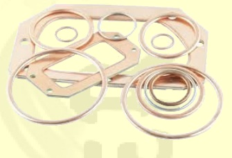

Charakteryzują się duża plastycznością i odpornością na korozję. Stosowane są do przewodów hydraulicznych wysokociśnieniowych, przewodów różnego rodzaju kwasów w temperaturze pokojowej.Zastosowanieznajdują w naprawie maszyn i innymWykonanie z blachy, pasów lub taśmy miedzianej M2G, M3G, M1R, M2R, M1EWymiary i wymagania wg PN-77/M-82002 i PN-77/M-82003 oraz wg dokumentacji technicznej klienta
